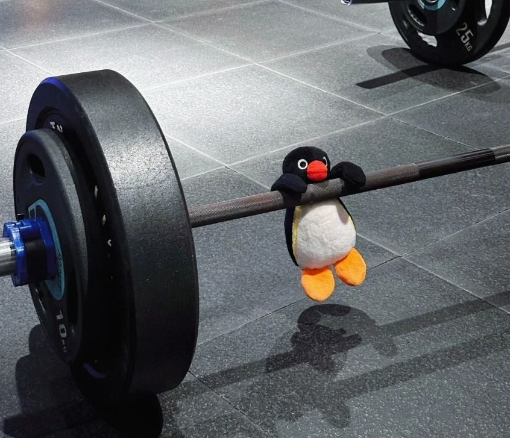
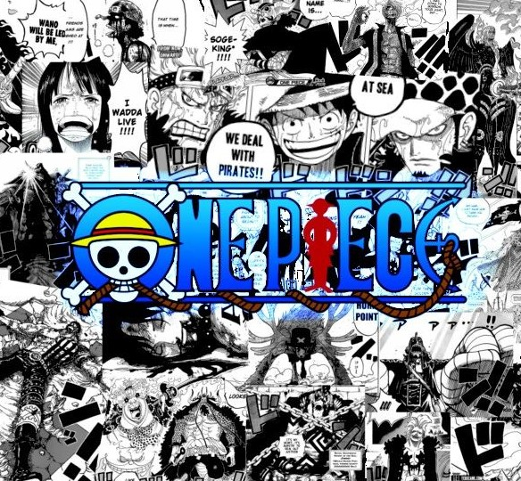
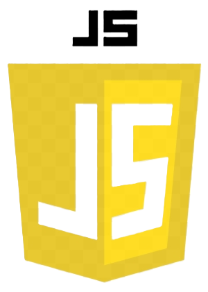
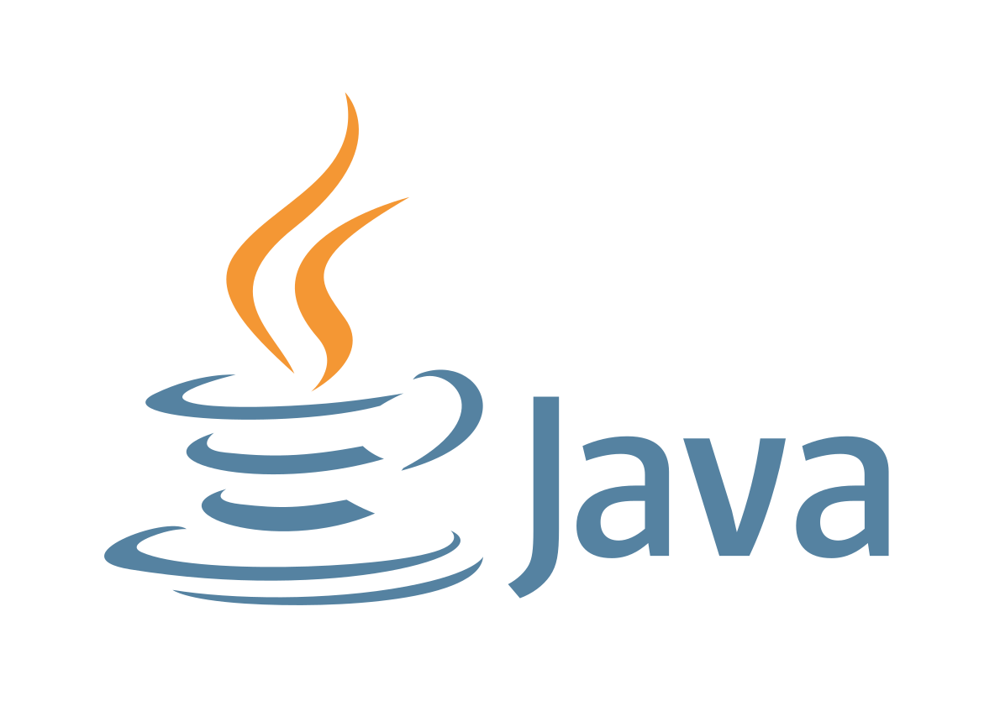
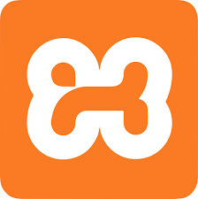
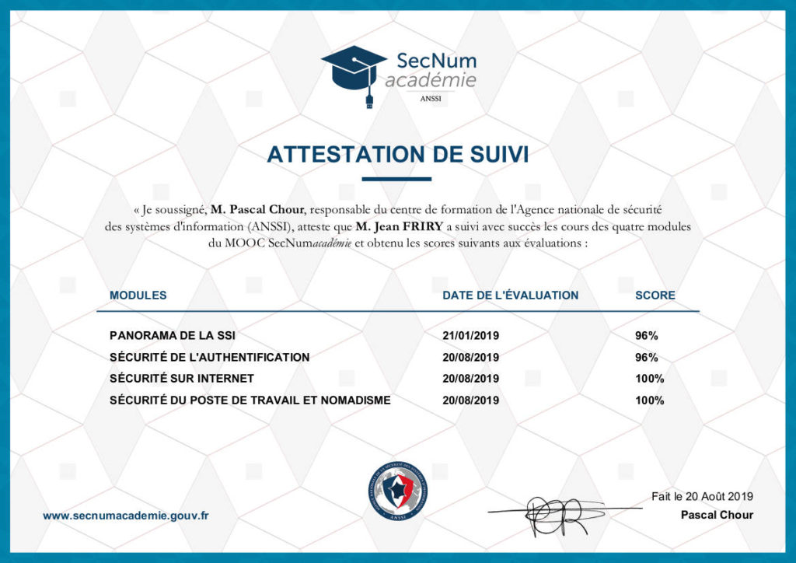

Mon histoire
Je m'appelle Rayan BENNACEUR, j'ai 23 ans. Titulaire d'un baccalauréat général (Physique-Chimie / SVT), je suis actuellement en 2e année de BTS SIO spécialité SLAM (Solutions Logiciels et Applications Métiers).
Passionné de nouvelles technologies, je souhaite faire carrière dans l'informatique et contribuer activement à l'innovation technique qui régit notre monde.
Mon parcours
Baccalauréat Général
Physique-Chimie / SVT — Lycée Guillaume Budé, Limeil-Brévannes
BUT Génie thermique et énergie
Université Paris-Est Marne-la-Vallée, Champs-sur-Marne
BUT Mesure physique
Université Paris-Est Créteil
BTS SIO – SLAM
École IRIS Paris, Paris 17e
Mes centres d'intérêts
🎮 Jeux vidéos
Qui n'aime pas les jeux vidéos ? Héros, sorciers, elfes… Tout ce dont un homme peut rêver s'y trouve.

💪 Musculation
Je m'entraîne depuis 2 ans en salle. Un bon moyen de me défouler et de m'entretenir après des heures devant un écran.

📚 Manga
Les mangas stimulent ma réflexion et mon imagination. One Piece d'Eiichiro Oda est mon manga préféré.
Qu'est-ce que le BTS SIO ?
Le BTS SIO (Services Informatiques aux Organisations) est un diplôme national en informatique, préparé en deux ans. Il forme des professionnels capables de contribuer à la production et la fourniture de services informatiques aux organisations.
Qu'est-ce que l'épreuve E5 ?
L'épreuve E5 représente une étape clé du BTS SIO. Elle exige la présentation d'au moins deux projets liés par un contexte commun, en relation avec l'option SLAM. Elle évalue les situations professionnelles mises en œuvre au cours des deux années de formation, accompagnées d'une grille de compétences.
Mes compétences techniques







Mes certifications
